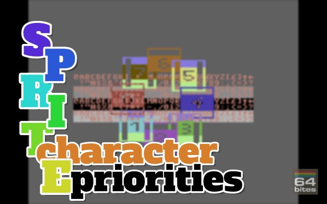
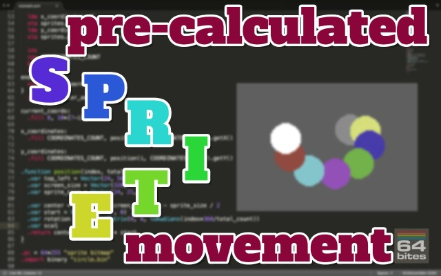
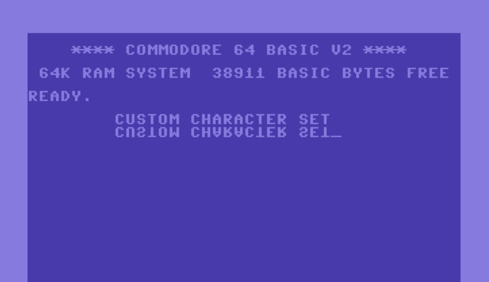
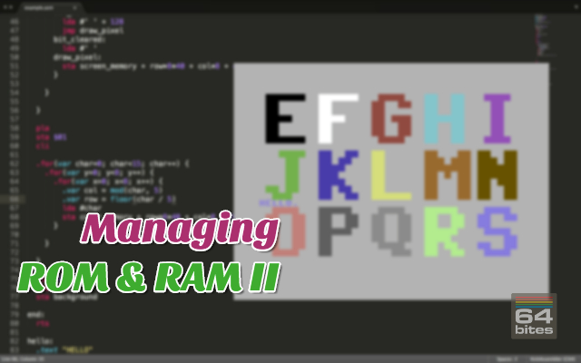

Episode #051 - Hi-Res Bitmap Mode
The Commodore 64 can display images with the maximum resolution of 320 by 200 pixels. But we only learned how to fill the screen with 256 different characters at most. This works great as tile-based graphics for games but to draw images we want to have a way of drawing each pixel independently. To do that we need to learn how to use bitmap modes that VIC-II can display. The one we will learn today is called the High-Resolution Bitmap Mode.Watch the video
Download show notes
Click on the button below to get the full transcript, source code and programming exercises.
This way you follow along while watching the episode.
You will not only understand what is happening but also code everything yourself!
Download show notesBy the way. This episode is part of a Season 6. So you can get it in a bundle with 8 other episodes.
You can read more about that below
Season 6 - Graphical modes, animation, drawing priorities

Here's what you will get
- 9 videos (50+ minutes in total)
- transcripts (13000+ words)
- source code examples (10000+ LOC)
- access to 64bitesVIP Facebook group, where you can get help
- plenty of exercises to solve on your own
- online streaming
- download with no DRM
- one time payment (no monthly/annual fees)
You WILL learn how to:
- Disable BASIC and KERNAL ROMs as well as I/O registers to get more space for your programs.
- Move the Character Generator ROM into the Address Space to read the character bitmaps.
- Design you own custom character set
- Use every built-in graphical mode
- Hi-Res Character Mode
- Multicolor Character Mode
- Extended Background Color Mode
- Hi-Res Bitmap Mode
- Multicolor Bitmap Mode
- Animating arbitrary Sprite movement.
- Use Sprite-Character drawing priorities in all graphical modes
All Episodes in this Season

Episode #054 - Sprite-Character Priorities
Today we will focus on sprite display priorities. Or in other words, how can we display sprites in front or behind the character-based graphics. We will explore all built-in graphical modes and learn the exact order of sprite and character graphics display in different configurations. 
Episode #053 - Pre-calculated Sprite Movement
We have been animating sprites in the past but only in a way of changing their bitmaps on each frame. But this kind of animation is not unique to sprites. It can also be realized using the character graphics. Sprites are designed to be movable and today we will take a look into a technique that allows them to follow virtually any path.
Episode #052 - Multicolor Bitmap Mode
The Multicolor Bitmap mode is the last of built-in graphical modes that Commodore 64 can display. As the name suggests, it can display bitmap images with additional colors, but it sacrifices the horizontal resolution. In the hands of a talented artist it can be used to create colorful and beautiful images.
Episode #051 - Hi-Res Bitmap Mode
The Commodore 64 can display images with the maximum resolution of 320 by 200 pixels. But we only learned how to fill the screen with 256 different characters at most. This works great as tile-based graphics for games but to draw images we want to have a way of drawing each pixel independently. To do that we need to learn how to use bitmap modes that VIC-II can display. The one we will learn today is called the High-Resolution Bitmap Mode.
Episode #050 - Extended Background Mode
The last of built-in character modes that the Commodore 64 can display is an extended background color mode. It allows us to combine high-resolution graphics with additional colors but sacrifices the amount of characters that we can choose from. In the hands of a skilled artist it can give your game a unique look that cannot be replicated in different modes.
Episode #049 - Multicolor Character Mode
In this episode, we are going to talk about the Multicolor Character Mode, which allows us sacrifices the horizontal resolution of a character for additional colors. It can be used to add shading in tile based graphics but requires careful choice of a color palette or custom characters to display readable text.
Episode #048 - Hi-Res Character Mode
Commodore 64 has plenty of built-in graphical modes that we can use to paint images on the screen. All of them use characters in one way or the other. Some of them enable us to achieve better resolution while others give us more colors or more characters to choose from. Today we will use the Hi-Res character mode to create a mockup of a rogue-like game with knights, monsters, dragons and coins. Lot's of coins... 
Episode #047 - Custom Character Set
Commodore 64 has two default character sets. We can switch between them by pressing the shift+commodore key. In this episode we will learn how to create our own character bitmaps and make the computer display them. 